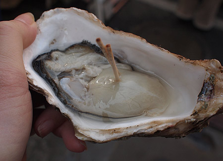
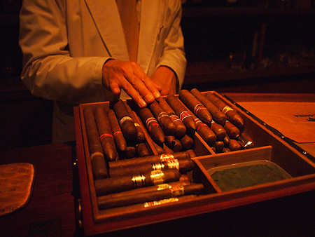
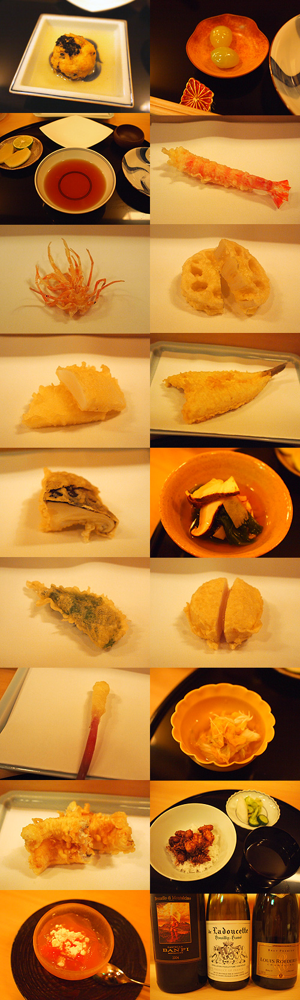
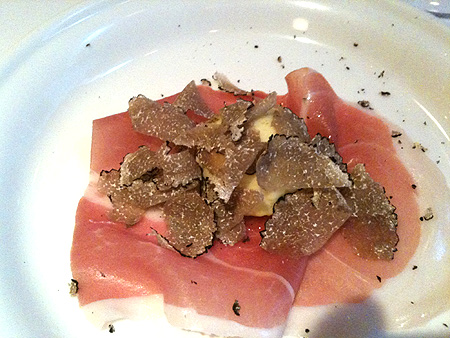

カテゴリ: たべもの
-
おすすめのタレ
こないだテレビを見ていたら、大盛りタレントホンジャマカの石ちゃんが「あちこち食べ歩いてきた中のベスト3！」としてあげたものの一つが宮崎、おぐらのチキン南蛮だった。 スタジオで実食して出演者全員「おいし…

-
だってお肉好き！
お肉が好きなら炭火好き！ 小さな我が家でもうもうと煙を上げるよ！だって美味しいんだもん！炭火家焼肉！ レバ刺しも準備するよ！芝浦と場から直送牛レバ。ごま油塩で、とろ旨！

-
築地市場つまみぐい
隅田川沿いをたらたら歩いて築地市場到着。 さーて、まずは喉を潤さないとねー！ とゆーわけで新鮮剥きたての牡蠣！ちゅるん！ごくん！ 店頭に並んでいるのはまだ殻が剥かれる前で、お金を払うとお店のおにい…

-
カニ王国(2)寿司
真鯛、蟹、のどぐろ、赤螺、鮑、白子、鰤トロ、大トロ、ホワイトサーモン。 やっぱり抜群に美味しかったのはのどぐろ。 ホワイトサーモン？なるものはこってりとしたバターのような脂で、酢飯に良くあっていたで…

-
カニまみれカニ地獄カニの襲来
カニです。 カニ！ …たぶん私の前世は蟹食い猿だったはず…ってぐらいカニが好き。 にしても、女子ってカニ好きよねー。やっぱり尿酸値を気にしなくていいからなのかなー？ というわけでカニまみれの夜。…

-
シガーの夜
銀座のバーにてシガー… ふらっと入ったとこで、店名があやしいうえに、また行けるかどうかも怪しい… …というか、ほんとに存在する店なのか記憶も怪しいバーなのだけど、唯一確かなのは、こうして写真が残って…

-
築地「清寿」天ぷら
ご縁があって、ミシュランひとつ星の天ぷら屋さん「清寿」にご招待いただきました。 店内は能舞台のように、無駄をそぎ落とした空間。カウンターのむこうに、一輪差しが壁にかけてあるだけ。 こちらの天ぷらは…

-
イタリアワインの会3
イタリアワインの会も3回目。 本日はイタリアワイン界では有名なソムリエ、内藤和雄さんがいらっしゃるお店に。 繊細なスパークリングからスタート。 とても上品な泡立ちでするんと喉に落ちる。 アミュ…

-
イタリアンの会2
備忘録です。 フルーツトマトとモッツアレラ、トマトピューレ。 チーズのおやき（名前失念…あああ） パン3種。ハーブとナッツとフルーツの入ったパンがうんまい。 帆立のソテー。だだちゃまめとイン…

-
〉kunuさま
生ハムとトウモロコシのジェラート…に、サマートリュフ！ トウモロコシの甘みで生ハムのしょっぱさも良い塩梅。 サマートリュフ。贅沢。早松同様香りが優しい。 アンティパスト ・しまえび2種とウニ ・キ…

-
トムカーガイ＋クン
一年で暑さMAXの頃合いになると、トムヤムクン、トムカーガイが飲みたくなる。 自分の中で「この暑さはタイの暑さ！！」ってスイッチ入るみたい。 でも、タイもトーキョーもそんな暑さは変わらないよーな感じだ…

-
家族焼肉
弟＆妹のオゴリで焼肉！ホルモン！ こんな日が来るとはなー。 ちなみに親には焼肉屋さんに連れて行ってもらったことありませんの。 外食ってラーメンか蕎麦屋かファミレスかって感じだったのよね。 だから、今…

-
おうちごはん
久しぶりにちゃんと料理。というわけで、タルト生地から作っておりますよー！ 小麦粉120g、バター25g、オリーブオイル大さじ2-3ぐらい、たまご１個をねりねり。 マッシュルームのタパス。スペインの…

-
MAKOTOさま
七里ヶ浜で世界一の朝食が食べられる「bills」とゆーお店がある。。。という話しをどこかしらで聞いてから 「行ってみたいなー」「行ってみたいー」ともんもんとしていたのだけど、食べログとか見ると大行列必…

-
冬のデザート 干し柿のクリームチーズサンド
干し柿クリームチーズサンド。干し柿ひとつあたりに個包装のクリームチーズ1/2をはさんで できあがり。 チーズの塩気と乳製品のコクが干し柿の甘みによく合うんですわー。 白ワインでもお茶でも。 高カロリー…

-
鍋城主なわたくし
エンゲル係数が高いなーと、家計簿見ながらつくづく思う。 だからといって反省してご飯と梅干だけの日々にするわけではないけど。 とはいえ、決して毎日饗宴を催しているわけではなく、今の季節はもっぱら鍋三昧…

-
トリッパ
美味しいイタリアン食べたい病です。 とりあえず、トリッパ煮てみましたよっ！ ウチからちょっと自転車を走らせた先にコリアンタウンがあって、そこにある精肉店はホルモン類が充実。 んで、ハチノスも当たり前の…

-
♪♪
地味に弁当生活続いております。 梅干がだいぶこなれてきた感じ。 それにしても曲げわっぱの弁当箱は優秀。 この寒い季節でも美味しく食べられる。逆にちょっと冷えたごはんが美味しく感じるくらい。

-
ごめーん
トーキョー戻って、好き勝手に食べていたらどうも太った。 体重計が無いからわかんないんだけど、たぶん2-3キロは太ってるはず！ ウチ腿の雰囲気とかちがう！ というわけで、しばらく炭水化物と脂質を減らす…

-
すごいパン
ボワブローニュのパン。 天然酵母の生地もムチムチしていて美味しいのだけど、特筆すべきはこの！レーズン！ パン食べてんだかレーズン食べてんだかわかんないとゆーボリューム！ しかもこのレーズンがんまいの！…

-
voie lactee
神谷町にあるvoie lacteeに行ってきました。 こちらは現代陶芸コレクターの菊池智氏の美術館に併設されたレストランです。 最近、雑誌、テレビでも紹介されているので有名になりつつありますがー……

-
フォアグラテリーヌ レシピ
瓶詰めフォアグラのレシピがあんまり無いので覚え書きとして記録。 使うのは手前のパッキン付きガラス瓶。 フランスの老舗ガラス器メーカー、ル・パルフェのガラス瓶（テリーヌジャー）です。 合羽橋で半額で購…

-
二日目フレンチ
カレーは二日目が美味しいけど フレンチはどうなのかしらね。 とにもかくにも、食材が余っているので二日目フレンチ。 ハーブのサラダ。コラーゲン仕立てごまだれドレッシング←ちょっとレシピが怪しくなって…

-
フレンチ！フレンチ！フレンチ！
むしょうにフレンチ。 まー連休で多少時間に余裕があるしね。 オニオングラタンスープ 百薬たまごとトマトのサラダ。コンソメジュレ。 洋なしとフォアグラソテーバルサミコソース仕立て マグレ鴨…

-
調味料バトン
-
レシピのない料理

-
曲げ輪っぱ弁当シリーズ

-
>はなびさま
ちなみに、最近のお弁当はこんなかんじです。 すっかり曲げわっぱも定着し、質実剛健。 ずっと自宅にいるので、ちゃんと食器で食べるという手もあるのだけど、それでもやっぱり「お弁…

-
いもうと弁当
妹からメールが来た。 大学時代の衝撃的な「おかん弁当」 「いつも茶色のおかず」とゆーあたりに「おかん弁当」らしさが… ってゆーか、やっぱりあいかわらずミックスベジタブルなんだ！ で、キャラ弁？……

-
>しのやん
ヒトの作ったお弁当が食べたいなーって思う今日この頃。 ほかほか弁当とか、ほっかほっか弁当とかほっかり弁当とかゆー発泡スチロール容器入りのお弁当ではなくって、知ってるヒトが作って、4～5時間たったぐらい…

-
もりもり食べて
仕事してます。 久しぶりに2徹もー。やっぱりつらいのは初日だなー。 ファスティングと一緒だ。…て、そっちはしたことないけど。 でも、昔と比べてぽろぽろと記憶が落ちていく。 しっかりと覚えて置かなくて…

-
すっぽん
すっぽんたべさせて！ とゆーわけで、ごちそうになりましたわー。はーぷりぷり 春！な前菜。ホタルイカ豊漁みたいですねー。 山菜んまいなー。大人の味だなー。しみじみにがにが。 と！ら！ふ！ぐ！ ざ…

-
>りえさま
仕事はあいかわらずでんがな。 でも、なんかこーパリっとした感じが出ない。そーゆーときもあるんだなー。 ビルの谷間でもろもろ考える。 考えても仕方がないから歩いて行って、気がついたら築地でした。あは…

-
せったい
きれいな色～♪薄萌葱色。 興奮して、同僚の男のコに「そこでねー…えーと、かやるど？がやうど？みた」と言ったら 「…ガヤルド…ランボルギーニですね」と。 男のコはすーぱーかーが好きですねー。 1,7…

-
〉まっちゃんさま
今週のひるご飯。 仕事しながら、余り物でテキトーなものを作ってモニター見ながらお昼とゆーのがほとんど。

-
ひみつの…
イタリアン。 8時半からスタートして、気がつけば2時！！！ 相変わらず、気ままに作ってもらえるお料理は美味しくて、写真撮る前に食べちゃうというありさま。 他に魚料理（アクアパッツアうんまいの）2種と鴨…

-
〉まっちゃんさま
ずーーっとセブンイレブンご飯＆冷食ご飯だったので、ごちそうです。 今日は団体だか接待だかが入っているよーで、慌ただしかったよーなどーなのか。 どーゆーわけか、ここの前菜にはイナゴの甘露煮が出てくるのだ…

-
すくすく
むかしアシスタントだった男のコ（みそじ）にお昼をごちそうになった。 今ではすっかり有能なスタッフになっちゃってなんだかもうー。 アシスタントの男のコたちはみんなすくすく育つ。（アシスタントはなぜかみ…

-
久しぶりに駅弁
東京駅のグランスタを通ったら、「牛肉どまん中」が！ 美味しいって聞いてたから、食べたいなーと思っていたのでした。 が、見つけた日はそのあと打ち合わせが入っていたから買えず、次に通ったときはお腹がいっぱ…

-
きょうもほんとにお仕事
川のむこうには山並みがうっすら。 今日は先週に引き続き、ここでお仕事。 お仕事先の応接室に通されて気がつくと おひるー。 イワシのお寿司。んまいー。酢飯の酢加減と固さと温度が丁度いいー。 イワシも…

-
>まっちゃんさま
東海道線のグリーンにのって（ホリデー事前料金だと東京→小田原750円） ふしぎなお宿に宿泊中。 いつのまにやらぶつけたらしくて、左指が動きません。あー。 ベッドは押し入れっぽくて、小さいとき押し…

-
おしごと
行楽の季節ですなー。 お山がきれい！紅葉万歳！って仕事でお出かけです。 遠足きぶん。でも仕事です。 吊り橋のある公園を案内してもらう。 気持ちいいなー。でも仕事です。 鴨の鍬焼きをいただく！ んま…

-
関東風？
関東風チキン南蛮を食す。 関東風の特徴 ・甘酢あんかけ ・ごっついタルタル ・衣もごっつい（玉子→小麦粉の順で揚げてあると思われ） これはこれで美味しい。 チキン南蛮レシピ そのいち そのに そ…

-
>井上さんさま
スープストックトーキョーのオマールエビのスープ。 美味しい。 寒くなるとあったかーいスープを飲むと滋味染み渡る感じがする。 しみじみ。 あー伊勢エビの味噌汁のみたいなー。今は贅沢言わせてくださいー！

-
>まっちゃんさま
ひとりでがぶがぶ飲んですんません。ご馳走さまでしたー。 まだまだ出張延長中。 来月も後半は長期滞在となる予定でいますがどーなのか。 今はあちこち会社近辺のビジネスホテルを彷徨っているのだけど、一番宿…

-
世界旅行とケバブログ
晩御飯はスターケバブ。 ケバブ久しぶりー！ ケバブプレートが食べたかったのだけど、15分まえにヒヨコ豆のピラウが売り切れ。あー！ イスケンデルソースで、がうがう食べたかったんだけど、まーあきらめて、と…

-
今日も
ケバブです今日はケバブプレート。ヒヨコ豆のピラウ付き。 んまーいです。 赤ワインと一緒にご馳走様。 わたくしは「美味しい！」と思ったものは連続して食べても全然ヘーキなのでした。 たぶん。１週間ケバブ…

-
そう！それは！
会社イチの気配り男子が打ち合わせ帰りに買ってきてくれたCCドーナツ。 オリジナル・グレーズドが「んま！」 8秒チンして食べると、ずきゅーん「死んだ！」…と、美味すぎてヤられたゴッコを会社のコとする。…

-
食べたくナルナル
またまた出張で関東に来ております。 なんだかむしょうにケンタッキーのフライドチキンが食べたくて、購入。 みなさまはどこの部位がお好きでしょうかー？ わたくしはサイと言われる腰の部分が好き。ジューシー…

-
てんぷら
えへへ。銀座で天麩羅いただきました。 早松。香りがいいなぁ。 車えび三本。ぜいたくだー。 椎茸にきす。椎茸には海老が詰めてあるのかなー。んまい。 蟹とアスパラ 大将。天麩羅はやっぱ…

-
>まっちゃんさま
予告通り、曲げわっぱのお弁当箱を購入。 楽天で破格曲げわっぱ。 なんてことない内容のお弁当でも、曲げわっぱに入れるだけで、4割ほど見た目の美味しさが上がる気がいたします。 ミョウガと塩昆布…

-
うひゃ！
引っ越し前までは、会社は大きな複合商業ビルで、レストランやらコンビニやら、仕出しベントー屋さんやら、近所もロッテリアやら吉野家やらで、お昼とゆーものに困ったことなかったのだけど、こっちに引っ越してみた…

-
りょうり
今住んでいる家は、2年間限定の超激安破格物件なのですが、もともとモデルハウスに使われていたとゆーお家なのでした。 そんなわけで、キッチンも立派なシステムキッチン。食洗機とコンベクションオーブンと、ゴミ…

-
>ryuji_s1さま
プチトマトが山盛り100円だったので セミドライトマト作り。 これで半分ぐらい ヘタをとって、洗って、ヘタとオシリを分けるように半分に輪切り 切り口を下にしてペーパータオルで水分取り オーブ…

-
>mimiさま
かもめ食堂を見てから、ずーーーっと作りたいなぁーと思っていた シナモンロールを作ってみましたー。 レシピはこちらを参考に。 でも、18コは多すぎるので、以下の通り分量減らして作成。 あと、アレンジでレ…

-
＞しのやん
あいかわらずバタバタしてましてー しあさってはまた関東に戻って、そのまま年越しかー？とゆーよなーどーなのだろか？ こないだ出社したときに、徹夜用非常食として同僚からもらった缶詰。 相変わら…

-
引っ越し後の昼ご飯のいくつか
だいたい昨日の余り物でつくるチャーハンかパスタで適当にすますのでした。 納豆レタスちゃーはん こちらはなんだかめちゃくちゃ刺身が安くて美味しいので、昼休みにチャリチャリ自転車こいで近くのスーパーま…

-
魚介のリゾット・ペスカトーレ
なんだか忙しい今日この頃です。 「この仕事…ホントーに終わるのだろうか…」と毎度毎度思うのだけど、まー必ずどうにか終着駅にたどり着くことはできるのですね。 そんな今日この頃のごはん。 パスタ打ちま…

-
>いわしー
うどんも作ってみましたー。 生麺 ゆであがり 今回のレシピは 強力粉100g 薄力粉100g 塩 10g 水 100cc 練って丸めて踏んで寝かしてまた踏んで伸ばして切る 作る前にイメー…

-
ママレンジ！！！
そういえば… こんなもの買ったんだっけ… パスタマシーン！ 過去のブログを漁ったら、2004年2月購入とな！ 3年半も寝かしてました。 とりあえず… 蕎麦でも打つかぁ なぜパスタマシンでパ…

-
餃子「宝屋」
打ち合わせが遅くなって、東陽町の「宝屋」に連れてってもらいました。餃子屋さん。 見た目はどこの街にもありそーな中華料理店。 入り口では店主さん（？）が中華鍋をふりふり炒飯。 女将さんが麺棒ごろごろ餃子…

-
>mimiさん
忙しいやらなんやらかんやらで更新が止まっております。 海にもいけないので、日々のたべもの公開 まーなにはともあれ暑いのでタイ風夕食 トムヤムクン、タイ風薩摩揚、トルティーア（生春巻き代わり？） …

-
>パムッカレエキスプレスさん
年を取り、ますます脂が美味しい昨今です。 女子ひとり、週末に炭を起こして焼肉です。ふふふ。 飛騨コンロも年季が入ってまいりました。そんでもって炭の起こし方も段々上手になってきましたです。炭起こし用バ…

-
駄菓子育ち
北欧に行っていた同僚からのお土産（…のおすそわけ） 北欧名物サルミアッキ！…のさらにSUPER版(?) 見た目は黒いグミっぽいのだけど… 北欧の方々にとっては日常的に食べられている駄菓子らしいのだ…

-
TEMP等
こないだ浅草橋で見つけた看板。 添付URA？ てんぷらかぁ！ 天麩羅しばらく食べてません。 ハマグリ天麩羅食べたいなぁ～。

-
あついと
どうも熱を出すと食べたくなるものがあるのでした。 素麺とゼリエース …と去年の日記をみたら、ちょうどこの時期体調崩して、やっぱりゼリエースを作って食べていた…しかも同じイチゴ味。 バイオリズムとゆー…

-
サバ～
サバにパン！という衝撃的な組み合わせですが、これが美味しいのです。 去年トルコで食べて、感動したサバサンド。 むしょうに食べたくなって、作ってみましたー。塩サバをオリーブオイル振って香ばしく焼き、たっ…

-
青山
久しぶりに青山へ。 骨董通りで、あれこれ骨董品を見させていただきました。 実際に完品を見るというのはいい勉強になるかも。 あーこれのこの部分拾った！…というのがとんでもない金額だったり。 そのあと、…

-
お弁当もって
本日はちょいと房総下って浜歩きをしようかと、お弁当持っておでかけ。 焼きたらこのおむすびと、甘めの出汁巻き、小茄子の漬物に伽羅蕗。 水筒にはほうじ茶。 理想に近いお弁当を再現。 理想はこれにあと蕪の…

-
コストコドーナツ
念願のコストコドーナツ買って帰りましたよー。 味はまー…こんな感じかな。生地が美味しい。コストコのパンもそうだけど、材料がいいのかな。小麦とバターの味がいいですわ。 でも、かなり期待しすぎていたので…